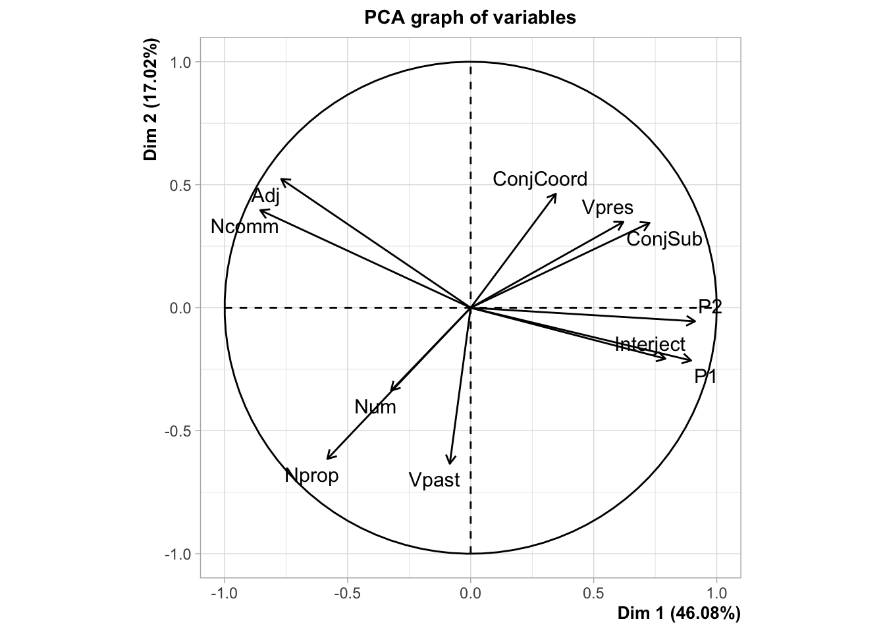
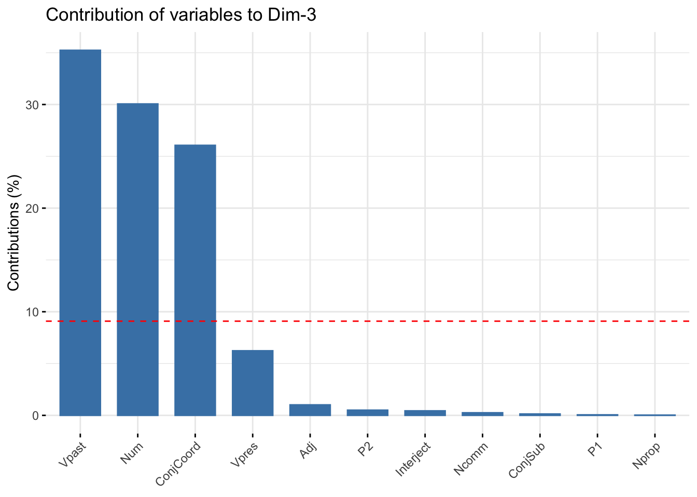

install.packages(c("Rling", "psych", "FactoMineR", "factoextra", "corrplot"), repos = "http://cran.rstudio.com")PCA
Objective
Students perform Principal Components Analysis (PCA)
Acknowledgment
Most of the following material comes from Levshina (2015), chapter 18 “Multidimensional analysis of register variation: Principal Components Analysis and Factor Analysis”.
Levshina, Natalia. 2015. How to do Linguistics with R: Data Exploration and Statistical Analysis. Amsterdam / Philadelphia: John Benjamins.
Many dimensions
The purpose of PCA is to reduce the number of dimensions (aka. variables) in a dataset. This is especially useful when you have many variables that are correlated to each other.
Let’s install the packages we’ll need:
Now, let’s load in the reg_bnc dataset from the Rling package, which has relative frequencies of different word classes in 69 subregisters of the British National Corpus, organized by six metaregisters: Academic, Fiction, News, Non-academic prose, Spoken, and Miscellaneous.
suppressPackageStartupMessages(library("tidyverse"))
library("Rling")
data(reg_bnc)In order to run PCA, there needs to be some multicollinearity, otherwise there’s no need to try to reduce the number of dimensions (aka. variables) in order to try to find underlying components.
We can look at the correlations (Pearson’s r, to be exact) between all pairwise comparisons of variables. A general rule of thumb mentioned by Levshina is that the Pearson’s r correlations should have an absolute value of at least 0.3. Let’s take a look:
reg_bnc %>%
select(-Reg) %>% # keep only continuous data types
cor() %>%
round(2) Ncomm Nprop Vpres Vpast P1 P2 Adj ConjCoord ConjSub Interject
Ncomm 1.00 0.23 -0.41 -0.21 -0.83 -0.75 0.86 -0.13 -0.52 -0.67
Nprop 0.23 1.00 -0.34 0.36 -0.37 -0.50 0.13 -0.45 -0.68 -0.39
Vpres -0.41 -0.34 1.00 -0.46 0.42 0.50 -0.35 0.21 0.48 0.41
Vpast -0.21 0.36 -0.46 1.00 0.03 -0.11 -0.16 0.07 -0.22 0.02
P1 -0.83 -0.37 0.42 0.03 1.00 0.80 -0.79 0.23 0.57 0.70
P2 -0.75 -0.50 0.50 -0.11 0.80 1.00 -0.70 0.31 0.57 0.79
Adj 0.86 0.13 -0.35 -0.16 -0.79 -0.70 1.00 0.04 -0.39 -0.62
ConjCoord -0.13 -0.45 0.21 0.07 0.23 0.31 0.04 1.00 0.26 0.18
ConjSub -0.52 -0.68 0.48 -0.22 0.57 0.57 -0.39 0.26 1.00 0.36
Interject -0.67 -0.39 0.41 0.02 0.70 0.79 -0.62 0.18 0.36 1.00
Num 0.21 0.28 -0.28 -0.13 -0.25 -0.16 0.03 -0.41 -0.28 -0.09
Num
Ncomm 0.21
Nprop 0.28
Vpres -0.28
Vpast -0.13
P1 -0.25
P2 -0.16
Adj 0.03
ConjCoord -0.41
ConjSub -0.28
Interject -0.09
Num 1.00While not every correlation coefficient is above 0.3, a good number of them are. We could remove variables that have correlation coefficients below 0.3, but let’s keep going with all variables.
Another way to test for multicollinearity is with a Barlett test, available in the psych R package. The null hypothesis is that the variables are not correlated, so a p-value below 0.05 would indicate that we can reject the null hypothesis of no correlation between the variables.
reg_bnc %>%
select(-Reg) %>% # keep only continuous data types
psych::cortest.bartlett()R was not square, finding R from data$chisq
[1] 536.3401
$p.value
[1] 4.109611e-80
$df
[1] 55Because the p-value is below the alpha level of 0.05, we reject the null hypothesis that there is no correlation between the variables. Let’s keep going!
Now, let’s run a Principal Components Analysis with the PCA function in the FactoMineR package. We give the PCA function the quali.sup = 1 argument to tell it that the first column (i.e., 1) is a qualitative (aka. categorical) variable with info about each observation.
library("FactoMineR")
pca1 <- PCA(reg_bnc, quali.sup = 1)
By default, the PCA function draws some plots for us. The “PCA graph of individuals” plots the 69 observations in a two-dimensional space with the first principal component (aka. dimension) on the x-axis labeled with “Dim 1”, and the second principal component on the y-axis. And the “PCA graph of variables” plots the 11 variables on the same two-dimensional space. However, this second plot also has a circle and arrows (aka. vectors). The angles between the arrows and the dashed axes indicate how strongly the variable is correlated with each of the first two principal components, such that, the smaller the angle, the stronger the correlation. For example, “P2” (i.e., second person pronouns) is strongly correlated with the first principal component (aka. loads onto the first principal component), while “past” is not closely correlated with the first principal component. Differently, “past” is strongly correlated with the second principal component (aka. second dimension) because its vector is very close to the dashed line representing that component, while “P2” is not correlated with that component. Two vectors that are close to each are strongly correlated, and may represent the same underlying theoretical construct (whatever that might be). The length of a vector represents how much variation in the variable is accounted for by these two principal components, with a max of 1 (i.e., the circle).
Let’s draw a better plot of the individuals:
plot(pca1, cex = 0.8, col.ind="gray", col.quali="black")The eigenvalues indicate how much of the variance is explained by each principal component. (BTW, there are as many principal components as there are variable that go into the PCA.) Let’s look at the eigenvalues and the percentage of variance explained by each PC:
pca1$eig eigenvalue percentage of variance cumulative percentage of variance
comp 1 5.06829360 46.0753964 46.07540
comp 2 1.87221031 17.0200937 63.09549
comp 3 1.37584355 12.5076686 75.60316
comp 4 0.79007568 7.1825062 82.78566
comp 5 0.64512706 5.8647914 88.65046
comp 6 0.42171443 3.8337675 92.48422
comp 7 0.30027045 2.7297314 95.21396
comp 8 0.18666203 1.6969276 96.91088
comp 9 0.14370361 1.3063965 98.21728
comp 10 0.10877509 0.9888644 99.20614
comp 11 0.08732419 0.7938563 100.00000Levsina (2015, p. 355) mentions two rules of thumb about how many PCs to keep. The Kaiser Criterion proposes that PCs whose eigenvalue are greater than 1 be kept, while another rule of thumb is less strict, with a threshold of 0.7. Others take a percentage approach and propose that the first N number of PCs that explain M% of the variance be kept, for example, 80% or 90% of the variance.
A scree plot is simply a barplot with the amount of variance explained by each PC. Here’s a base R way to draw one:
barplot(pca1$eig[,2], names = 1:nrow(pca1$eig), xlab = "Components", ylab = "Percentage of variance explained")And here’s a way with the factoextra package:
library("factoextra")Welcome! Want to learn more? See two factoextra-related books at https://goo.gl/ve3WBafviz_screeplot(pca1, addlabels = T)Now, let’s get the contribution of each variable to the first five PCs:
suppressPackageStartupMessages(library("corrplot"))
var <- get_pca_var(pca1)
corrplot(var$cos2)Here’s another view of each PC:
for (i in 1:5) {
plot(fviz_contrib(pca1, choice = "var", axes = i))
}